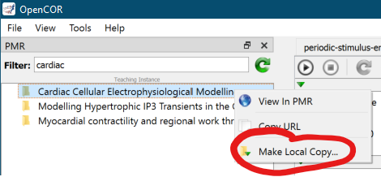

This workspace holds a collection of cardiac cellular models encoded in CellML. A convenient method to explore some of these models is to grab the source workspace and use the OpenCOR Jupyter notebook interface to launch the Cardiac Cellular Electrophysiological Modelling.ipynb notebook. We provide here step-by-step instructions for achieving this.
The Jupyter notebook is known to work with OpenCOR 14 September 2021 Snapshot, development and testing performed on the Windows version of OpenCOR. Any newer version should also work. Older versions may not. OpenCOR can be downloaded from: https://opencor.ws/downloads/index.html
The easiest method is to look for this PMR exposure in the OpenCOR PMR browser and make a local copy using OpenCOR.
First, make sure you have the PMR window visible in OpenCOR. Then filter for "cardiac cellular electrophysiological..." and you should see this exposure in the filtered list as shown below.
Once you can see this workspace listed, a right click should give the menu option to Make a Local Copy as shown below.

You will then be prompted for where to store the local copy - this should be a new empty folder. It might take a few minutes to make the local copy.
If you're happy with Git, just go ahead and git clone https://teaching.physiomeproject.org/workspace/a1
Open up a console on your machine. On Windows this is the Command Prompt: cmd. Once you have a console, change into the folder where you made a local copy of this workspace:
C:\Users\andre> cd "C:\Users\andre\cellml models"
And then launch the OpenCOR Jupyter notebook:
C:\Users\andre\cellml models> "c:\Program Files\OpenCOR\jupyternotebook.bat"
The specific location and command will depend on how you installed OpenCOR and your operating system. See the OpenCOR documentation for further details.
When you run the OpenCOR Jupyter notebook command, it should automatically open the notebook server in your web browser and you should see a page like that shown below.
This shows the default a1 folder, but you should see the folder that you saved the workspace to, and you can then navigate into that folder to see the workspace content.
Once you navigate into the workspace folder you should see a listing of the workspace content. From there, you can launch the Jupyter notebook Cardiac Cellular Electrophysiological Modelling.ipynb as shown below.
Which should then open the notebook and show something similar to the below.
From there, it is possible to use the Cell menu to "Run All" to simply run the whole notebook, or to manually step through the notebook executing each step as you go.